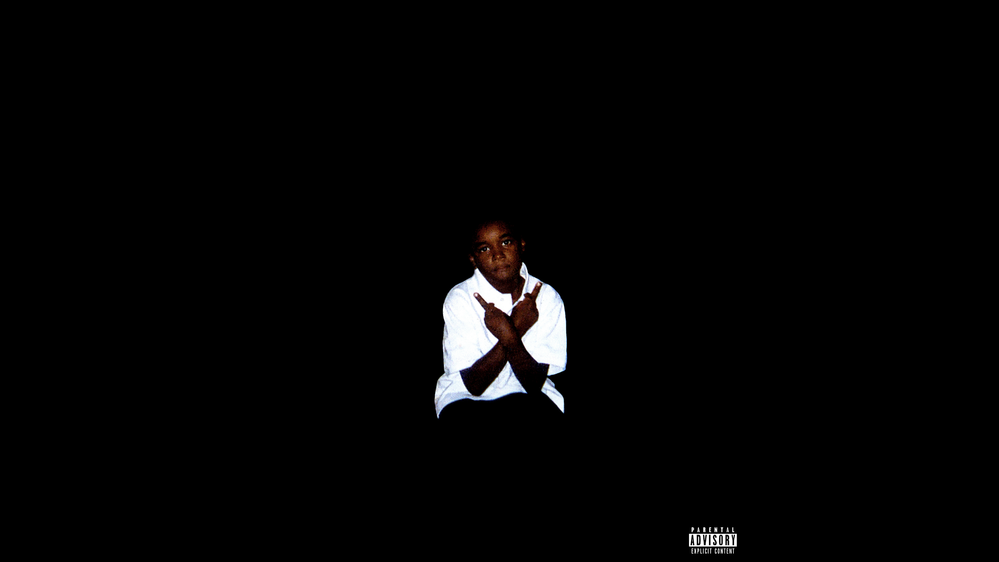

My name is Nnoli Temple and i am an aspiring fullstack developer. I'm still at the beginning of my journey and i have a long way to go but I'm confident that with hardwork and dedication i can reach my goal
None yet as I am still undergoing my course in University
Beginner Front-end Developer.
Little experience with Machine Learning and Network Admin due to school practicals.